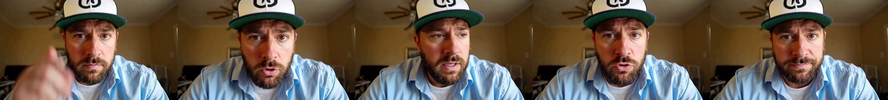
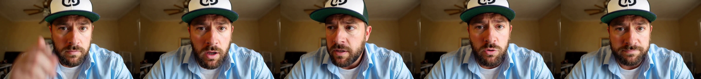
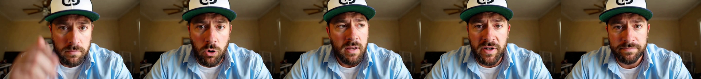
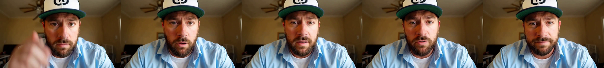

Current online slides · v1.40 release
Retained v1.38 measurements and media. Historical Base50 uses default offload; an optimized BF16 baseline is pending. No new benchmark result is introduced in v1.40.
Back to the slides · Download measurement JSON · Download request timings
Slide 18: seven measured optimization groups
960 × 544 · 124 frames at 24 FPS · 8 GPUs · seed 43
Standalone Ref2VA, with the same reference image, audio and prompt. End-to-end timing ends when the complete audiovisual MP4 response has arrived.
Each new cohort has one initialization request, one warmup request and three formal requests. Only formal requests contribute to the displayed median.
The final configuration did not put all three formal requests below 5.000 s.
| Group | Cumulative configuration | Median (s) | Worst (s) | Three formal samples (s) |
|---|---|---|---|---|
| 0 | Retained Base50 baseline | 247.956 | 248.298 | 247.956371, 246.200546, 248.297979 |
| 1 | PDD: 50 to 8 steps | 42.962 | 42.968 | 42.890917, 42.961756, 42.968086 |
| 2 | VSA sparse attention | 26.199 | 26.205 | 26.120714, 26.198997, 26.204949 |
| 3 | QAD + native FP4 attention | 19.351 | 19.385 | 19.351314, 19.385305, 19.309999 |
| 4 | Ulysses: RDMA, layout, V/gate overlap and NCCL IB | 6.831 | 6.887 | 6.887250, 6.826748, 6.830541 |
| 5 | 2/3/2 head pipeline | 6.472 | 6.472 | 6.471757, 6.429025, 6.471706 |
| 6 | CUDA Graph | 6.201 | 6.260 | 6.259960, 6.201149, 6.200940 |
| 7 | NVFP4 36L VAE + MP4 pre-encoding | 5.418 | 5.422 | 5.414622, 5.417645, 5.422367 |
The 247.956 s Base50 baseline is retained historical evidence. Checkpoints and runtime configurations change cumulatively; differences between rows do not isolate individual kernel speedups. These measurements do not establish PRO 5500 performance or rolling livestream continuity.
Every new request passed full video/audio decoding and eight-rank runtime checks. The three formal outputs within each new cohort have matching decoded video and audio hashes. Review includes five sampled frames per cohort and audio signal checks. Appearance, expression, motion and audio differ across configurations. Subjective speech quality and lip synchronization were not rated; perceptual equivalence is not claimed. Review details.
0 · Retained Base50 baseline
Median 247.956 s · Worst 248.298 s · RTF 47.992
Download representative formal output


1 · PDD: 50 to 8 steps
Median 42.962 s · Worst 42.968 s · RTF 8.315
Download representative formal output


2 · VSA sparse attention
Median 26.199 s · Worst 26.205 s · RTF 5.071
Download representative formal output


3 · QAD + native FP4 attention
Median 19.351 s · Worst 19.385 s · RTF 3.745
Download representative formal output

4 · Ulysses: RDMA, layout, V/gate overlap and NCCL IB
Median 6.831 s · Worst 6.887 s · RTF 1.322
Download representative formal output


5 · 2/3/2 head pipeline
Median 6.472 s · Worst 6.472 s · RTF 1.253
Download representative formal output

6 · CUDA Graph
Median 6.201 s · Worst 6.260 s · RTF 1.200
Download representative formal output

7 · NVFP4 36L VAE + MP4 pre-encoding
Median 5.418 s · Worst 5.422 s · RTF 1.049
Download representative formal output